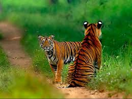
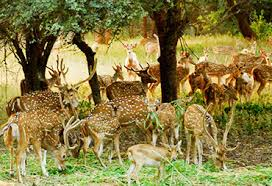
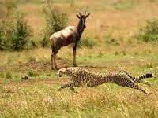
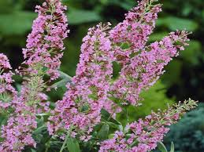
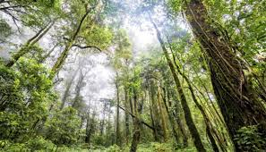
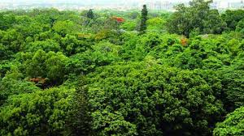

Telangana, located strategically in the central region of the Indian sub-continent, has representatives of Indian plant and animal life. The vegetation found in the state is largely of dry deciduous type with a mixture of teak, and species of the genera Terminalia, Pterocarpus, Anogeissus etc . The varied habitat harbors a diversity of fauna which includes tiger, panther, wolf, wild dog, hyena, sloth bear, Gaur, Black Buck, Chinkara, Chowsingha, Nilgai, Cheetal, Sambar and a number of birds and reptiles in the forest.
|  |  |  |
The Endemic species of Telangana state is: Tiger, Leopard, Gaint squirrel, Hyena, Wild dog, Blackbuck, Blue bull, etc are endemic species living in Telangana forests. Telangana state consists of a total of 108 species of mammals. Deer is the state animal of Telangana it reflects the belief of the people of Telangana.
The vegetation found in the state is largely of dry deciduous type with a mixture of teak, and species of the genera Terminalia, Pterocarpus, Anogeissus etc .the Flora of Telangana State comprises 1911 taxa of flowering plants distributed within 893 genera and 162 families.
|  |  |  |
Telangana, located strategically in the central region of the Indian sub-continent, has representatives of Indian plant and animal life. The vegetation found in the state is largely of dry deciduous type with a mixture of teak, and species of the genera Terminalia, Pterocarpus, Anogeissus etc .